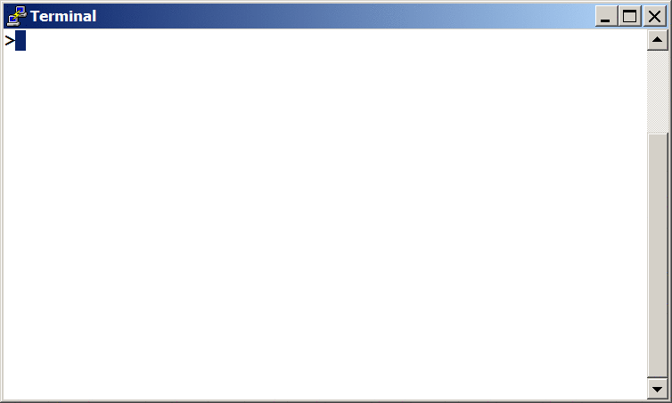
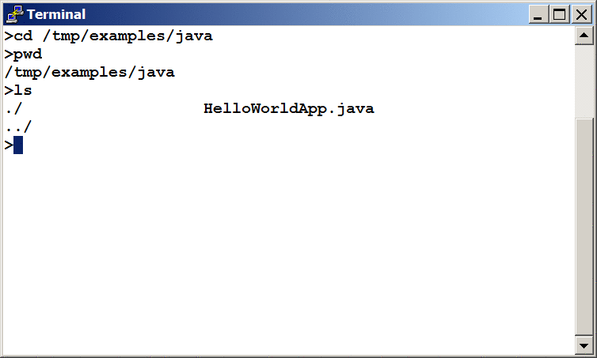
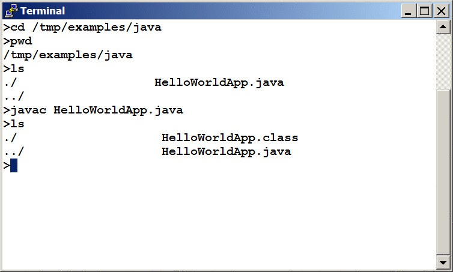
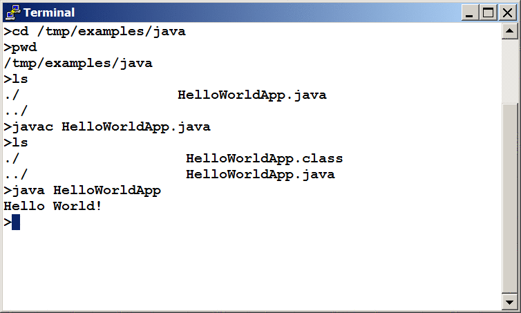

¡Es hora de que escriba su primer aplicación! Estas instrucciones detalladas son para los usuarios de Solaris OS y Linux. Instrucciones para otras plataformas están en "¡Hola Mundo!" para Microsoft Windows y "¡Hola Mundo!" para el EID Netbeans.
Si encuentra problemas con las instrucciones en esta página, consulte Problemas Comunes (y Sus Soluciones).
Para escribir su primer programa, necesitará:
El Kit de Desarrollo de Java SE 8 (KDJ 8)
Usted puede descargar la versión para Linux o Solaris OS ahora. (Asegúrese de descargar el KDJ, no el EEJ). Consulte las instrucciones de instalación.
Un editor de texto
En este ejemplo, usaremos Pico, un editor disponible en muchas plataformas de UNIX. Puede adaptar
facilmente estas instrucciones si usa un editor de texto diferente, tales como vi o
emacs.
Estos dos puntos son todo lo que usted necesita para escribir su primera aplicación.
Su primera aplicación, HolaMundoApl, simplemente mostrará el saludo "¡Hola Mundo!".
Para crear este programa, uste hará:
Crear un fichero fuente
Un fichero fuente contiene código, escrito en el lenguaje de programación Java, que usted y otros programadores pueden entender. Usted puede suar cualquier editor de texto para crear y editar ficheros fuente.
Compilar el fichero fuente y generar un fichero .class
El compilador del lenguaje de programación Java (javac) toma su fichero fuente y
convierte su texto a instrucciones que la máquina virtual de Java puede entender. Las instrucciones
contenidas en este fichero .class son conocidas como bytecodes.
Ejecutar el programa
La herramienta lanzadora (java) usa la máquina virtual de Java para ejecutar su
aplicación.
Para crear un fichero fuente, tiene dos opciones:
Usted puede salvar el fichero
en su ordenador y evitar un montón de tecleo. Entonces, puede ir directamente a
Compilar el fichero fuente.
HolaMundoApl.java
O, puede usar las siguientes (más largo) instrucciones.
Primero, abra un shell, o una ventana de "terminal".

Una nueva ventana de terminal.
La primera vez que aparezca el símbolo, su directorioa actual será habitualmente su directorio home.
Usted puede cambiar su directorio actual a su directorio home en cualquier momento escribiendo cd
en el prompt y presionando Intro.
Los ficheros fuente que crea deberían ser mantenidos en un directorio separado. Usted puede crear un directorio
usando el comando mkdir. Por ejemplo, para crear el directorio examples/java en el
directorio /tmp, use los siguientes comandos:
cd /tmp
mkdir examples
cd examples
mkdir java
Para cambiar el directorio actual a este nuevo directorio, introduzca:
cd /tmp/examples/java
Ahora puede empezar a crear su fichero fuente.
Arranque el editor Pico escribiendo pico en el prompt y presione Return. Si el sistema
responde con el mensaje pico: command not found, entonces Pico no estará disponible. Consulte con
su administrador de sistema para más información, o use otro editor.
Cuando inicia Pico, le mostrará un buffer nuevo, y vació. Este es el área en ele cual usted escribirá su código.
Escriba el siguiente código en el buffer nuevo:
/**
* La clase HolaMundoApl implementa una aplicación que
* imprime simplemente "¡Hola Mundo!" a la salida estándar.
*/
class HolaMundoApl {
public static void main(String[] args) {
System.out.println("¡Hola Mundo!"); // Muestra la cadena.
}
}
Sea Cuidadoso Cuando Escriba
javac) como el lanzador (java) son sensitivos-al-caso,
así que debe indicar las mayúsculas y minúsuculas consistentemente.
HolaMundoApl no es lo mismo que holamundoapl.
Salve el código en un fichero con el nombre HolaMundoApl.java. En el editor Pico, puede hacer esto
escribiendo Ctrl-O y entonces, abajo donde vea la frase File Name to write:,
introduzca el directorio en el cual desea crear el fichero, seguido de HolaMundoApl.java. Por
ejemplo, si desea salvar HolaMundoApl.java en el directorio /tmp/examples/java,
entonces escriba /tmp/examples/java/HolaMundoApl.java y presione Intro.
Puede escribir Ctrl-X para salir de Pico.
.class
Abra otra ventana de shell. Para compilar su fichero fuente, cambie su directorio actual al directorio donde
su fichero está localizado. Por ejemplo, si su directorio fuente es /tmp/examples/java, escriba el
siguiente comando en la consola y presione Intro:
cd /tmp/examples/java
Si introduce pwd en la consola, verá el directorio actual, el cual en este ejemplo ha cambiado a
/tmp/examples/java.
Si introduce ls en la consola, usted deberá ver su fichero.

Resultados del comando ls, mostrando el fichero fuente .java.
Ahora está listo para compilar el fichero fuente. En la consola, escriba el siguiente comando y presione Intro.
javac HolaMundoApl.java
El compilador ha generado un fichero bytecode, HolaMundoApl.class. En la consola, escriba
ls para ver el nuevo fichero que fue generado
en la siguiente figura.

Resultados del comando ls, mostrando el fichero .class generado.
Ahora que tiene un fichero .class, puede ejecutar su programa.
Si encuentra problemas con las instrucciones en este paso, consulte Problemas Comunes (y Sus Soluciones).
En el mismo directorio, introduzca en la consola:
java HolaMundoApl
La siguiente figura muestra lo que debería ver.

La salida imprime "¡Hola Mundo!" en la pantalla.
¡Enhorabuena! ¡Su programa funciona!
Si encuentra problemas con las instrucciones en este paso, consulte Problemas Comunes (y Sus Soluciones).